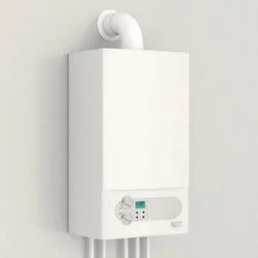

Condensatieketel
Een condensatieketel recupereert de warmte van de rookgassen om het water voor de centrale verwarming voor te verwarmen. Zo halen ze een erg hoogrendement, waardoor je flink kan besparen op je energiefactuur (tot wel 35%).
Wil je je oude gas- of mazoutketel vervangen? Dan is een nieuwe condenserende verwarmingsketel de meest budgetvriendelijke optie. Je kan je bestaande leidingen en warmtetoestellen namelijk gewoon blijven gebruiken. Zo spaar je heel wat arbeidskosten uit.
- Energiebron: gas of mazout
- Prijs condensatieketel: € 2.500 à € 5.000, incl. btw en excl. plaatsing
- Prijs verbruik: zeer goed
